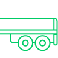
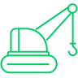

RTE Group
RTE Group создана командой профессионалов с серьезным опытом в сферах строительства и ЖКХ.
Мы отлично понимаем все задачи и вызовы, которые возникают при перевозке крупногабаритных и негабаритных грузов, и имеем все необходимые ресурсы для их решения.
Мы оказываем полный комплекс услуг, связанных с негабаритной транспортировкой грузов автотранспортом, начиная от согласования маршрута и заканчивая погрузкой и разгрузкой вашего груза или техники.
Наши услуги

Перевозка крупногабаритных грузов
RTE Group доставит гидрогенераторы, вышки, металлоконструкции, детали промышленного оборудования и другие грузы, с которыми обычные грузовики не справятся. Здесь нужен трал с тягачом. Помимо непосредственной перевозки получим все необходимые разрешения от надзорных органов и подберем оптимальный маршрут.
Подробнее
Негабаритные грузоперевозки
Негабаритным называется груз, габариты которого превышают допустимые нормы для перевозки автомобильным транспортом. Такая доставка требует тщательного планирования, поскольку «негабарит» создает дополнительные трудности всем участникам движения. Плюс, особо тяжелые конструкции оказывают высокое давление на дорожное полотно. RTE Group учтет все нюансы: организуем негабаритные грузоперевозки «под ключ».
Подробнее- 
Услуги трала
Предоставим полностью укомплектованный новый трал 2022-2023 года выпуска, сразу готовый к рейсу. Услуга подойдет тем, кому необходима специальная транспортировочная техника на определенное количество часов или дней. Например, для перевозки негабаритных грузов по разным маршрутам. Ставка фиксированная, предоставляются скидки за объем.
Подробнее 
Перевозка дорожной техники
Компания RTE Group перевезет кусторезы, бульдозеры, катки, бетоносмесители, бурильные машины, паровые молоты, погрузчики и другую специальную технику для проведения дорожно-строительных работ. Доставим на любую строительную площадку, в том числе удаленную, и заберем после завершения. По нормам и правилам, установленным российским законодательством. Погрузка и выгрузка спецтехники включены в стоимость.
Подробнее
Перевозка строительной техники
Перевезем технику для строительной площадки любых масштабов: экскаваторы, краны, грузовики, самосвалы, самоходное оборудование, гусеничные, колесные и рельсовые машины. В зависимости от габаритов подберем трал, разработаем маршрут, запросим в компетентных органах специальное разрешение на негабаритные грузоперевозки и оплатим госпошлину. Гарантируем соблюдение сроков.
Подробнее
Перевозка сельхоз техники
Плуг, культиватор, сеялка, комбайн, косилка, опрыскиватель, поливные и зерноочистительные машины — доставляем на поле все виды сельскохозяйственной техники вне зависимости от габаритов и массы. Простой алгоритм работы для заказчика: достаточно передать оборудование нам и получить его в конечной точке. Все промежуточные этапы и риски RTE Group берет на себя.
Подробнее- 
Перевозка крана
Перевозим мостовые, стреловые, козловые, портальные краны и краны-балки, в том числе на рельсовом или гусеничном ходу. Применяем низкорамные телескопические прицепы, подстраивающиеся под габариты конкретной модели техники. Проводим тщательную предрейсовую подготовку крана, чтобы уменьшить до нуля вероятность его повреждения в пути.
Подробнее 
Перевозка экскаватора
RTE Group доставит на строительную площадку одноковшовые и многоковшовые экскаваторы любой размерной группы — от первой (до 6,3 тонны) до шестой (до 71 тонны). Используемые тралы позволяют закрепить даже крупногабаритные подземные экскаваторы и тяжелые гидравлические машины для добычи угля. Благодаря RTE Group можно не переживать о сохранности дорогостоящего оборудования.
Подробнее
Аренда трала
Если у вас есть опытный персонал, но не хватает специальной техники, предлагаем арендовать трал по фиксированным тарифам. Это выгодно, когда машина не нужна на постоянной основе — вы оплачиваете только конкретный срок аренды. RTE Group дает стопроцентную гарантию на исправность каждого трала, их своевременное обслуживание по регламентам производителя и полную комплектацию.
Подробнее
Почему мы?
- 1
Опытные логисты и водители
Сумеют построить маршрут, который сэкономит ваши деньги и время и довезут ваш груз вовремя, в целости и сохранности. Средний опыт наших сотрудников – 15 лет в сфере грузоперевозок.
- 2
Свежий автопарк
Вся техника не старше 2022 года производства. Своевременное техническое обслуживание и гарантия производителя защищает нас от форс-мажоров, связанных с неожиданными поломками техники.
- 3
Оперативность
Дадим расчет по вашей заявке в течение 1 часа и выедем на ваш заказ в течение 1 суток.
- 4
Надежность
Ваш груз будет застрахован в одной из ведущих страховых компаний России, а наш договор на перевозку учитывает все интересы клиента.
Города
Наш головной офис находится в Казани. Также наши представительства открыты в Уфе, Ижевске, Ульяновске, Йошкар-Оле, Нижнем Новгороде, Самаре, Перми и Чебоксарах.
ПодробнееКейсы
Все кейсы
Кейс
Перевозка кранов – сложный и ответственный процесс, требующий особой тщательности. Наша команда гарантирует безопасное перемещение кранов любого типа и размера. Специализированная техника и опытные водители обеспечат успешную доставку.
- Перевозка крупногабаритных грузов
- Казань

Кейс
Перевозка кранов – сложный и ответственный процесс, требующий особой тщательности. Наша команда гарантирует безопасное перемещение кранов любого типа и размера. Специализированная техника и опытные водители обеспечат успешную доставку.
- Перевозка дорожной техники
- Йошкар-Ола
Кейс
Перевозка кранов – сложный и ответственный процесс, требующий особой тщательности. Наша команда гарантирует безопасное перемещение кранов любого типа и размера. Специализированная техника и опытные водители обеспечат успешную доставку.
- Негабаритные грузоперевозки
- Нижний Новгород